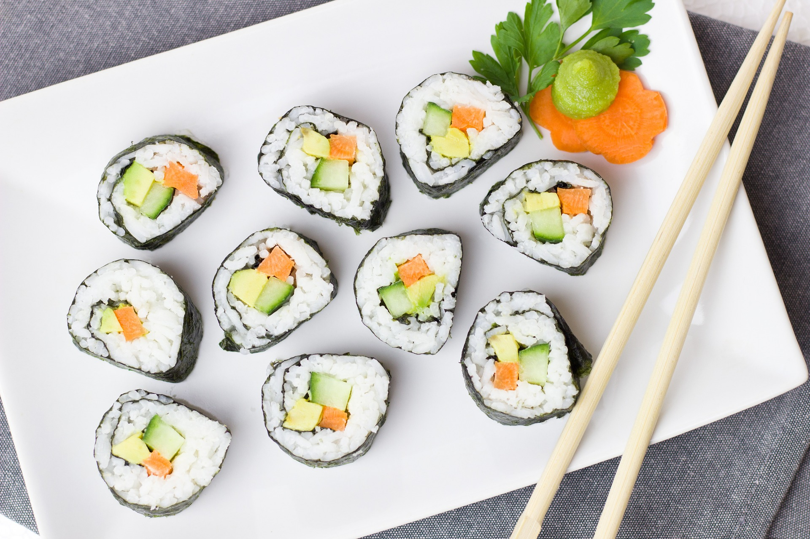

Recettes du Japon
Découvrez les délices de la cuisine japonaise avec nos recettes traditionnelles et modernes.
Sushi

Description : Le sushi est un plat japonais traditionnel composé de riz assaisonné et de poisson cru ou de fruits de mer, souvent accompagné de légumes, d’algues et de wasabi. Un incontournable de la cuisine japonaise.
Ingrédients :
- 300 g de riz à sushi
- 350 ml d'eau
- 50 ml de vinaigre de riz
- 2 c. à soupe de sucre
- 1 c. à café de sel
- Filets de poisson cru (saumon, thon) ou fruits de mer
- Feuilles de nori (algues séchées)
- Wasabi, gingembre mariné, sauce soja
Instructions :
- Cuire le riz : Rincer le riz jusqu’à ce que l'eau soit claire. Le cuire dans l'eau, puis laisser reposer 10 minutes après cuisson.
- Assaisonner le riz : Mélanger le vinaigre, le sucre et le sel. Incorporer au riz encore chaud et laisser refroidir.
- Assembler les sushis : Déposer le riz sur une feuille de nori, ajouter le poisson et rouler. Couper en morceaux ou façonner en boules avec des tranches de poisson sur le dessus.
- Servir : Accompagner de wasabi, gingembre mariné et sauce soja.
Ramen au Miso

Description : Le ramen au miso est un bouillon riche et savoureux, souvent préparé avec du miso, des nouilles ramen, des œufs marinés, du porc et des légumes. Un plat réconfortant et nourrissant.
Ingrédients :
- 200 g de nouilles ramen
- 1 litre de bouillon de poulet
- 3 c. à soupe de pâte de miso
- 2 gousses d'ail, hachées
- 1 c. à soupe de gingembre râpé
- 2 œufs marinés
- Tranches de porc (chashu)
- Oignons verts, champignons, maïs
Instructions :
- Préparer le bouillon : Dans une casserole, faire revenir l'ail et le gingembre. Ajouter le bouillon et porter à ébullition, puis incorporer la pâte de miso.
- Cuire les nouilles : Cuire les nouilles selon les instructions du paquet, puis les égoutter.
- Assembler les ramen : Verser le bouillon dans un bol, ajouter les nouilles, les tranches de porc, l'œuf mariné et les légumes.
- Servir : Garnir d'oignons verts et savourer chaud.
Tempura

Description : La tempura est un assortiment de légumes et de fruits de mer enrobés d'une pâte légère et frits, offrant une texture croustillante et légère, souvent accompagnée d'une sauce de trempage.
Ingrédients :
- Crevettes, légumes (carottes, patates douces, courgettes)
- 100 g de farine
- 200 ml d'eau glacée
- 1 œuf
- Sel
Instructions :
- Préparer la pâte : Mélanger l'eau glacée, l'œuf et la farine pour obtenir une pâte légère. Ne pas trop mélanger.
- Tremper et frire : Tremper les crevettes et légumes dans la pâte, puis frire dans de l'huile chaude jusqu'à ce qu'ils soient dorés et croustillants.
- Servir : Servir immédiatement avec une sauce de trempage au soja.
Yakitori
Description : Les *Yakitori* sont des brochettes de poulet grillées et laquées avec une sauce sucrée-salée à base de sauce soja. Un mets japonais simple et délicieux, souvent dégusté en accompagnement.
Ingrédients :
- 500 g de poulet (cuisse ou blanc)
- 100 ml de sauce soja
- 50 ml de mirin
- 50 ml de saké
- 1 c. à soupe de sucre
- Bâtonnets de bambou pour brochettes
Instructions :
- Préparer la sauce : Dans une casserole, mélanger la sauce soja, le mirin, le saké et le sucre. Porter à ébullition, puis laisser réduire pour épaissir la sauce.
- Préparer les brochettes : Couper le poulet en morceaux et les enfiler sur les bâtonnets de bambou.
- Griller et laquer : Griller les brochettes et les badigeonner régulièrement de sauce jusqu’à ce qu’elles soient bien caramélisées.
- Servir : Déguster chaud en accompagnement de riz.